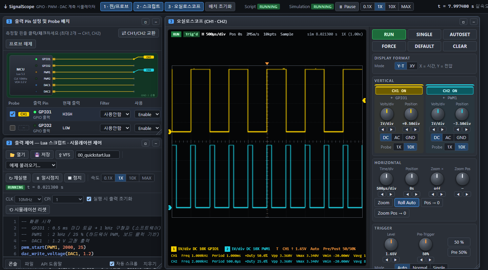

SignalScope
v1.0.0 릴리즈GPIO, PWM, DAC 출력 신호를 가상 오실로스코프로 측정하는 동작을 모사하는 프로그램입니다. 설치 없이 브라우저에서 실행되고, Lua 스크립트로 출력을 제어합니다.
임베디드 개발자입니다. 다양한 기술을 학습하고 이를 실제 문제 해결에 적용하는 것을 좋아합니다.

GPIO, PWM, DAC 출력 신호를 가상 오실로스코프로 측정하는 동작을 모사하는 프로그램입니다. 설치 없이 브라우저에서 실행되고, Lua 스크립트로 출력을 제어합니다.
브라우저에서 바로 즐기는 무료 온라인 오목 게임입니다. 회원가입 없이 입장할 수 있고, 실시간 대국과 비공개 방, 전적 시스템을 제공합니다.